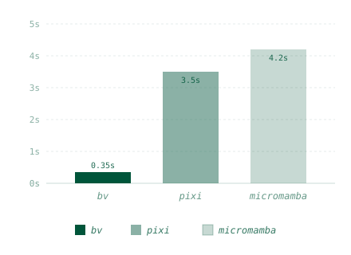
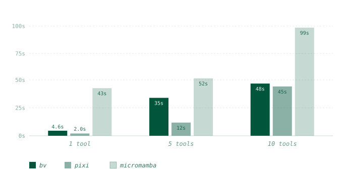

A bioinformatics pipeline written in January will, in March, produce
different output, fail to install, or fail to run on the cluster.
Conda environments don't reproduce: a pinned version string
(samtools==1.20) is meaningless once its dependencies move,
and the same environment.yml resolves differently on a
laptop and on an HPC node. Container tags solve part of this but are
mutable and rarely allowed on shared HPC where Docker isn't installed.
bv pins each tool by its OCI manifest digest, not by tag
or version string. bv add blast writes bv.toml
and bv.lock, generates PATH shims under .bv/bin/,
and pulls the image. Existing scripts that call blastn or
samtools by name keep working. Commit the lockfile;
bv sync on any other machine reproduces the exact bytes by
digest, on Docker (laptop) or Apptainer (HPC), with the same manifest
and the same bv run syntax on both.
curl -fsSL https://raw.githubusercontent.com/tejasprabhune/bv/main/install.sh | sh
# or: cargo install biovLinux and macOS. On Windows, use WSL2 with Docker Desktop's WSL2 backend; native Windows is not yet supported.
bv add blast
bv exec blastn -query foo.fa -db nr
git add bv.toml bv.lock # commit the pin; `bv sync` reproduces anywhereTwo numbers matter: how long the first pipeline invocation takes (cold install) and how long every subsequent invocation takes (start latency). bv wins on start latency because containers fork-exec without an environment-activation step. On install, bv converges with pixi at scale: layer sharing across tools means the 10th tool in a typical bioinformatics stack reuses most of its layers from earlier installs.
first-run latency (per invocation, after install)

install time, cold cache (1, 5, 10 tools)

bv shells out to Docker or Apptainer; install one first.
# Docker, typical on a laptop
curl -fsSL https://get.docker.com/rootless | sh
# Apptainer, typical on HPC nodes (no daemon, no root required)
conda install -c conda-forge apptainer
For GPU tools on Docker, install nvidia-container-toolkit.
Apptainer uses the host's NVIDIA libraries directly with --nv.